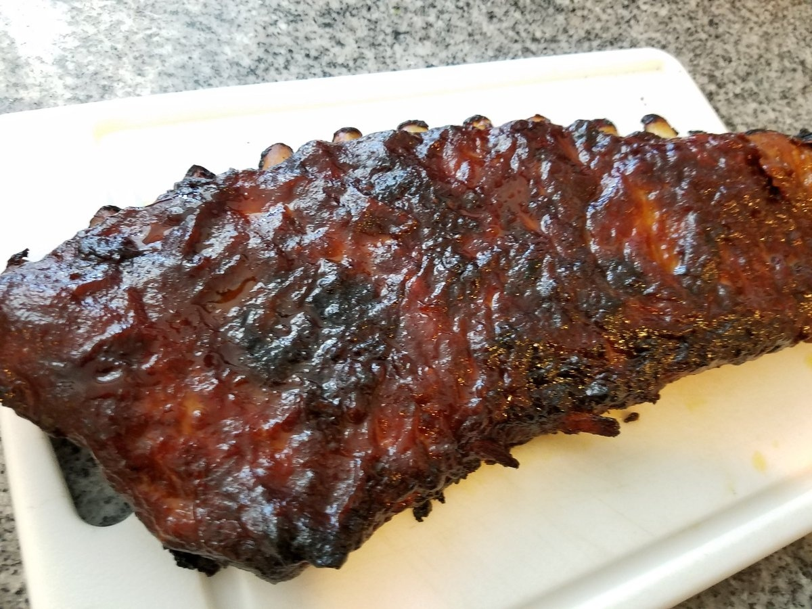

Homepage
 Photo from perculia on wowhead
Beer Basted Boar Ribs
Orgin: World of Warcraft
Prep: 30 minutes
Cooking: 3 hours
makes: 4 servings
Pairs well with: Bean Soup, beer
The secret's in the malt! Ragnar Thunderbrew has been drawing patrons to his tavern for decades with the savory smell of his famous ribs. Now the old Thunderbrew family recipe for the best ribs in the Eastern Kingdoms is available to all.
Items to gather:
- One 3-pound rack of pork spareribs, or boar ribs, if available Salt and pepper, to taste 1 tablespoon olive oil
- 2 shallots, diced
- 1 clove garlic, minced
- 2 teaspoons red curry paste
- 1 cup ketchup
- 1 bottle beer (Rhapsody Malt is best, but substitute in a pinch. The less hoppy, the better.)
- 2 tablespoons Worcestershire sauce
- 2 tablespoons molasses
- 1 tablespoon apple cider vinegar
How to craft:
- Preheat the oven to 275°F. Line a rimmed baking sheet with aluminum foil and set a rack over top. Place the ribs on this rack, meaty side up, and sprinkle liberally with salt and pepper. Place in the oven to start slow-cooking.
- Place a saucepot over medium heat and add the oil, shallots, and garlic. Cook until the shallots are soft and the garlic is fragrant, 3 to 5 minutes. Stir in the curry paste to coat the shallots and garlic, then add the remaining ingredients. Cook for 20 to 30 minutes, stirring occasionally, until the mixture has reduced to a semithick sauce. For a smoother sauce, blend the mixture with a submersible blender until no pieces of shallot or garlic remain.
- The ribs will slow cook for about 3 hours. Baste with the sauce every 20 to 30 minutes or so (cover the underside a few times, too) until you've got a nice thick layer of tangy delicious sauce. Allow to cool slightly after cooking, and enjoy.
Homepage